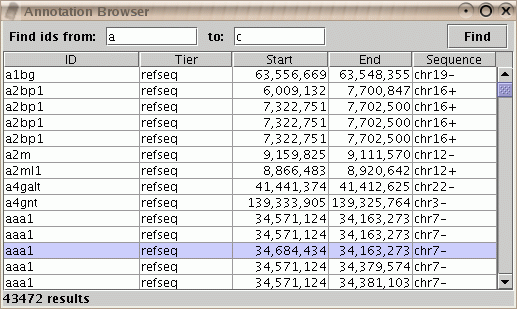
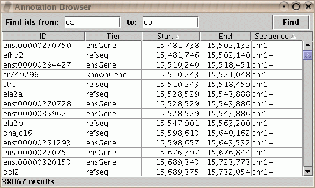
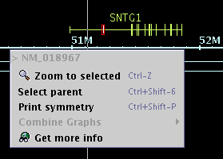
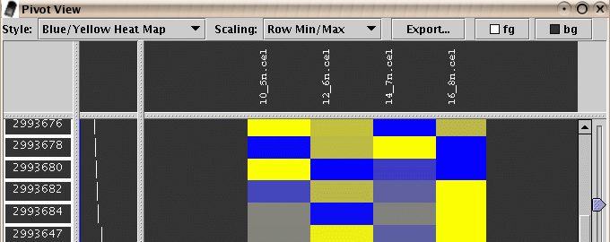
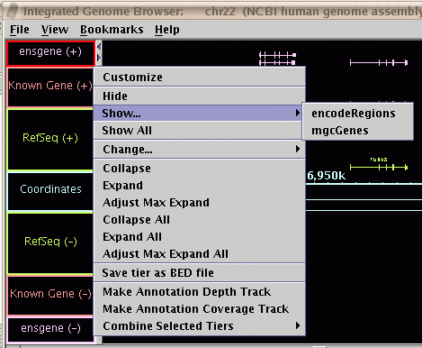
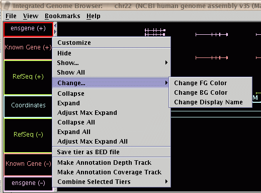

- The Annotation Browser now allows you to filter the results
to show a chosen subset. Annotations that map to multiple locations
will list once per location.

Figure: Annotation Browser showing IDs between "a" and "c".
- You can sort based on one or more columns in the Annotation Browser.
Click on the column header to set the primary sort column.
Control-click on additional column headers to set secondary sortings.

Figure: Annotation Browser sorted first by Sequence, then by Start.
- You can now use the "Get more info" pop-up menu item to get information
on a gene when you have selected an exon or a gene. It is no longer necessary
to first perform "Select parent" to choose the gene that includes the exon.
Access this pop-up menu by using right-click (control-click on Macintosh)
on the map.

Figure: "Get more info" now works on exons as well as genes.
- The Pivot View has been improved. You can now change the background
and foreground colors, as well as the style and scaling. Your preferred
choices will be remembered and applied to future sessions.

Figure: Pivot View now remembers your favorite settings.
- It is now possible to "Show" hidden tiers individually by name
in addition to the "Show All" menu item.

Figure: You can now show hidden tiers by name.
- You can now easily change features of selected tiers with a
"Change" menu item.

Figure: The "Change..." menu items.
- You can now place the horizontal and vertical zoomers on
whichever sides of the map you prefer.
Select File->Preferences->Other Options.

Figure: Options for placing the zoom controls.
IGB is part of the GenoViz project. Source code for IGB is released under the Common Public License, v1.0 an OSI approved open source license. IGB uses other open source software packages which are covered by their own open source licenses.
IGB is Copyright (c) 2000-2006 Affymetrix, Inc. Research and development of IGB is supported in part by NIH grant R01HG003040